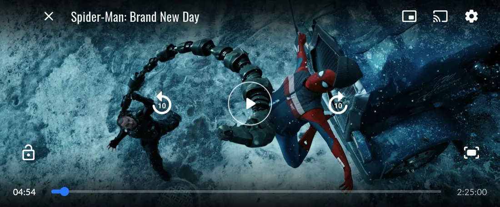
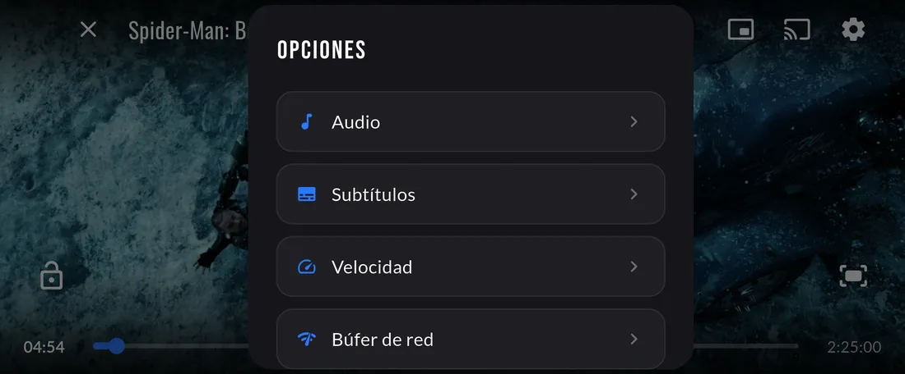
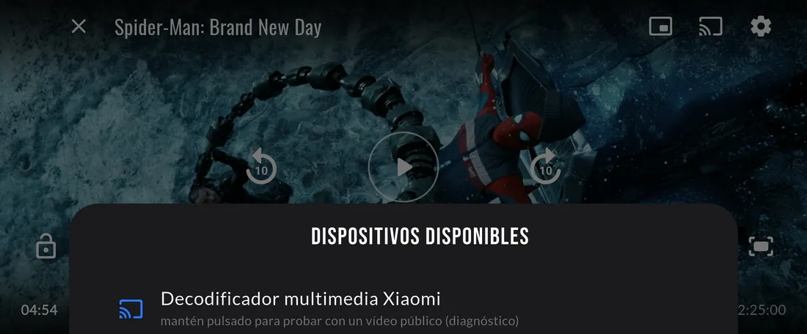

RP Studios
La app de Raton & Puig Movies para ver películas y series en Android: móvil, tablet y TV box.
Descargar

Sigue donde lo dejaste
Al abrir la app tienes una película destacada lista para ver y, justo debajo, lo que dejaste a medias con su barra de progreso. Un toque y continúas.
La portada se organiza en filas como Nuestros nuevos lanzamientos, RP da miedo o Para reírse un rato.

Toda la información de cada película
Cada título tiene su ficha con año, duración, géneros, sinopsis y el reparto principal con la foto de cada actor.
Ves la valoración de la comunidad de RP Studios junto a la de TMDB, y si la dejaste a medias, el botón Continuar desde te lleva al minuto exacto.
Un reproductor a la altura
Avanza o retrocede 10 segundos con un toque, cambia el idioma del audio y los subtítulos, ajusta la velocidad o el búfer de red si tu conexión va justa, y bloquea la pantalla para que no se toque nada sin querer.
Desde el móvil puedes mandar la película a la tele con Chromecast o seguir viéndola en una ventana flotante mientras usas otras apps.





Lo más visto y lo que te va a gustar
El Top 10 de la comunidad enseña lo que más está viendo todo el mundo.
Y la app aprende de ti: si acabas de ver Alien, te propone títulos parecidos en Porque viste… y Seguro que te encanta.


Explora por género o por saga
Entra en Acción, Comedia, Terror o Documental desde la pestaña Explorar.
En Colecciones tienes más de 140 sagas agrupadas en bilogías, trilogías y sagas largas, para verlas en orden sin buscar una a una.

Busca, y si no está, pídela
Busca por título o escribe el nombre de un actor y aparecen todas sus películas del catálogo.
¿No encuentras la que buscas? Pídela desde la propia búsqueda: la app envía la petición al administrador ella sola, sin que tengas que escribir a nadie.
Y además
- En la tele, con el mando Instálala en el TV box y manéjala con su mando, como cualquier app de la tele.
- Del móvil a la tele Desde el móvil envías la película al televisor con Chromecast.
- Móvil y tele sincronizados Seguir viendo y tus preferencias se comparten entre el móvil y la tele: empieza en uno y sigue en el otro.
- Asistente de voz Pulsa el botón azul y pídeselo: busca una película, ponme el tráiler, reprodúcela…
- Descargas Guarda películas para verlas sin conexión, con pausa y reanudación.
- Tu perfil Favoritos, historial y tu propio avatar.
¿Te la instalas?
Se instala en un minuto. La primera vez entrarás con tu cuenta de Telegram.
Ir a la descarga